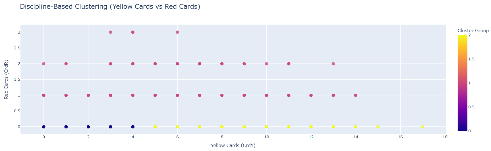
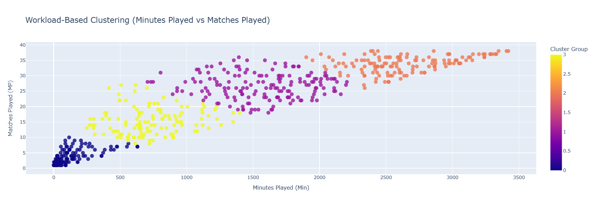
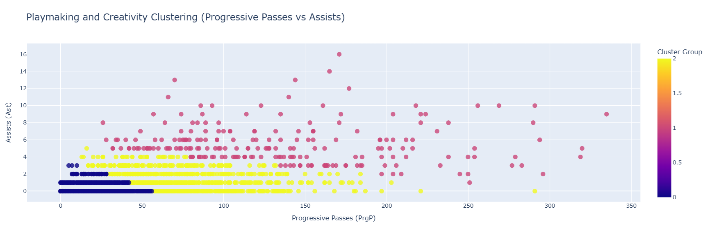
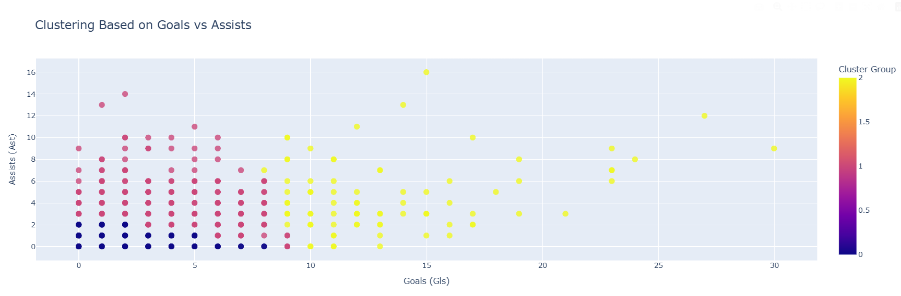

Player Dataset Models
-
Top 20 Predicted Goal Scorers for the Coming Season
This model identifies the top 20 players likely to lead in goal-scoring during the upcoming football season. By analyzing extensive historical data, the model uses advanced regression techniques to predict goal-scoring potential for each player. The insights are particularly valuable for coaches, scouts, and analysts in identifying key performers who can make a significant impact.
Key Features Used for Prediction:
- Matches Played: Number of matches a player has participated in, reflecting consistency and availability.
- Minutes on the Field: Time spent on the pitch, indicating a player’s role and reliability.
- Expected Goals (xG): A metric estimating the likelihood of scoring based on the quality of chances.
- Non-Penalty Expected Goals (npxG): Evaluates goal-scoring opportunities excluding penalties, emphasizing open-play contributions.
- Progressive Carries: Dribbles that move the ball significantly closer to the opponent's goal.
- Progressive Passes: Passes that advance the ball into dangerous areas, showcasing creativity and playmaking skills.
The predictions are generated using a robust training dataset, including past player performances, team dynamics, and competitive league data. The output is visualized as a bar chart, ranking players based on their projected goal tally. This allows stakeholders to easily compare players’ predicted performance and identify top contenders for individual awards or crucial team roles.
Notable Insights from the 2023-2024 Prediction:
- Lionel Messi: Predicted to dominate the season with 27.9 goals, demonstrating his consistent brilliance even in later years of his career.
- Karim Benzema: A close second, showcasing his adaptability and continued importance to his team with a predicted 25.6 goals.
- Emerging Stars: Players like Jude Bellingham and Artem Dovbyk are expected to make significant contributions, reflecting their growing influence in top-flight football.
The model's accuracy and depth provide clubs with a strategic advantage, helping to optimize player selection, match preparations, and long-term planning. By combining traditional statistics with modern analytics, this tool delivers a comprehensive outlook on player performance.
MSE: 0.27522619542619536
R² Score: 0.9714575243103586 -
Top 20 Predicted Assist Leaders for the Coming Season
This model identifies the top 20 players likely to excel in providing assists during the upcoming football season. Leveraging advanced machine learning techniques, such as a Random Forest Regressor, the model evaluates player features that contribute to their playmaking abilities.
Key Features Used for Prediction:
- Progressive Passes: Passes that significantly advance the ball towards the opponent’s goal.
- Expected Assists (xA): The likelihood of a pass leading to a goal, based on historical data and context.
- Non-Penalty Expected Goals Assists (npxGA): Assists derived from non-penalty situations, focusing on open play contributions.
- Player Age: Incorporates experience and physical peak years into the analysis.
- Minutes Played: Time spent on the field, reflecting the player’s availability and role in the team.
By analyzing these features, the model forecasts assist potential for players across various leagues, offering critical insights into emerging playmakers and consistent performers.
Notable Insights from the 2023-2024 Prediction:
- Antoine Griezmann: Predicted to top the assists chart with 14.7 assists, showcasing his creative dominance and team impact.
- Alex Baena: A rising star in the playmaking domain, with a forecasted 13.3 assists.
- Karim Benzema: Continues to display his multifaceted abilities, combining goal-scoring and assist contributions, with a predicted 12.3 assists.
- Young Talents: Nico Williams and Vinícius Júnior demonstrate their growing influence with double-digit predicted assists.
The model output is visualized through a bar chart, ranking players based on their predicted assists. This visualization aids analysts and teams in identifying top-performing creators and planning tactics around these players.
MSE: 0.03692993762993763
R² Score: 0.9894141621547954 -
Clustering Analysis for Player Insights
This model employs K-Means clustering to uncover patterns in player behavior and performance. It identifies distinct groups of players based on their discipline, workload, creativity, and goal-scoring capabilities:
Discipline-Based Clustering
Groups players by their yellow and red card tendencies to identify discipline profiles.
 Model: KMeans
Number of Clusters: 3
Silhouette Score: 0.62
Inertia (Sum of Squared Distances): 1222.43
R²-like Metric: -1221.43Workload-Based Clustering
Clusters players based on minutes played and matches played to highlight player workload.
 Model: KMeans
Number of Clusters: 4
Silhouette Score: 0.54
Inertia (Sum of Squared Distances): 96.78
R²-like Metric: -95.78Playmaking and Creativity Clustering
Groups players by their progressive passes and assists to measure creativity.
 Model: KMeans
Number of Clusters: 3
Silhouette Score: 0.51
Inertia (Sum of Squared Distances): 1569.35
R²-like Metric: -1568.35Goals vs Assists Clustering
Identifies clusters of players based on their goal and assist contributions.
 Model: KMeans
Number of Clusters: 3
Silhouette Score: 0.64
Inertia (Sum of Squared Distances): 1643.27
R²-like Metric: -1642.27 -
Best 11 Players Model
This model identifies the top 11 players for each football season using a 4-3-3 formation. By analyzing individual performance metrics such as Goals, Assists, and Minutes Played, the model selects the best-performing players in their respective positions. The lineup is optimized to include:
1 Goalkeeper (GK)
The last line of defense, tasked with stopping the opponent's shots and organizing the backline.
4 Defenders (DF)
Responsible for preventing goals and supporting the team in building play from the back.
3 Midfielders (MF)
The engine of the team, linking defense and attack while controlling the tempo of the game.
3 Forwards (FW)
The primary goal-scorers, leading the attack and creating opportunities to score.
The team is determined for each season based on a comprehensive evaluation of player contributions to their teams.
2020-2021 Season
The best 11 players for the 2020-2021 season, ranked by Goals + Assists:
R-squared: 0.5394 | MSE: 4.7182
2021-2022 Season
The best 11 players for the 2021-2022 season, ranked by Goals + Assists:
R-squared: 0.4581 | MSE: 4.5130
2022-2023 Season
The best 11 players for the 2022-2023 season, ranked by Goals + Assists:
R-squared: 0.4881 | MSE: 4.1930
2023-2024 Season
The best 11 players for the 2023-2024 season, ranked by Goals + Assists:
R-squared: 0.5063 | MSE: 4.8358
This model identifies the top 20 players likely to excel in providing assists during the upcoming football season. Leveraging advanced machine learning techniques, such as a Random Forest Regressor, the model evaluates player features that contribute to their playmaking abilities.
Team Dataset Models
-
Team Data Analysis and Player Recommendations
This model employs cosine similarity to identify and recommend top-performing players for football teams. By analyzing key performance metrics, the model suggests players who can strengthen team dynamics based on their statistical contributions.
Key Metrics Analyzed:
- Goals: Measures a player's finishing ability and scoring contribution.
- Assists: Highlights creative playmaking and team support.
- Progressive Carries: Evaluates how effectively a player moves the ball forward during play.
- Progressive Passes: Assesses the player's ability to advance the ball towards the opponent's goal.
The model assigns a performance score to each player and identifies those who align closely with a team's needs. It uses cosine similarity to match player profiles across teams, ensuring targeted and effective recommendations.
Notable Insights:
- Lionel Messi: Tops the recommendations with the highest performance scores, showcasing his consistent dominance across key metrics.
- Jude Bellingham: Emerging as a top-choice midfielder due to his balanced attacking and defensive contributions.
- Karim Benzema: Continues to be a standout forward with remarkable scoring and playmaking abilities.
- Kirian Rodríguez: A lesser-known but highly impactful player making significant contributions in progressive metrics.
The bar chart below visualizes the top 10 most recommended players across all teams. These recommendations provide valuable insights for team managers and analysts to enhance their squad's capabilities.
Top 10 Predicted Goal Scorers
This model predicts the top 10 players expected to score the most goals in the upcoming football season. By utilizing advanced machine learning techniques, the model analyzes historical player performance and key metrics to identify the most likely top scorers.
Key Features Used:
- Goals: Total goals scored in previous seasons.
- Expected Goals (xG): A measure of the quality of goal-scoring opportunities.
- Minutes Played: Considers how much playing time the player had.
- Non-Penalty Expected Goals: Excludes penalties to assess open-play effectiveness.
- Progressive Carries and Passes: Tracks a player's ability to advance the ball towards the opponent’s goal.
Key Insights:
- Artem Dovbyk: Tops the chart with a predicted 24.8 goals, showcasing his remarkable consistency in finishing.
- Lionel Messi: Predicted to score 23.3 goals, demonstrating his sustained brilliance in attack.
- Karim Benzema: Remains a dominant force with 22.1 predicted goals.
- Robert Lewandowski: A proven striker expected to net 21.9 goals, maintaining his elite status.
- Gerard Moreno: Among the top performers with a predicted 11.6 goals, emphasizing his attacking contributions.
This visualization offers a clear representation of the predicted goals for each player, providing valuable insights for coaches, analysts, and fantasy football enthusiasts.
MSE: 1.1809
R² Score: 0.8707Player Classification Using Gradient Boosting
This model uses a Gradient Boosting Classifier to categorize football players into distinct performance categories based on their on-field metrics. The classification process helps to identify player roles, strengths, and areas of excellence within a team structure.
Features Used:
- Goals and Assists: Captures the player's direct contributions to scoring.
- Progressive Passes and Carries: Reflects a player's ability to advance the ball effectively.
- Defensive Metrics: Includes tackles, interceptions, and blocks to identify defensive roles.
- Minutes Played: Accounts for player workload and participation in matches.
Categories:
- Aggressive Defender: Focuses on strong defensive actions with limited offensive contributions.
- All-Rounder: Balances defensive, creative, and scoring abilities.
- Elite Goalscorer: Specializes in scoring goals at a high level of efficiency.
- Playmaker: Excels in creating opportunities and controlling the tempo of the game.
- Workhorse: High effort across the pitch, contributing to multiple areas without specialization.
Insights from the Confusion Matrix:
- The model accurately identifies "Playmakers" and "Others" categories with high precision.
- There is some overlap between "Aggressive Defender" and "Workhorse," suggesting shared defensive attributes.
- "Elite Goalscorers" and "Elite Playmakers" are correctly categorized based on specific high-impact features like goals and assists.
This classification helps coaches and analysts evaluate team dynamics, identify key player roles, and plan strategies around player strengths.
MSE: 0.0015
R² Score: 0.9694Predicting Match Win Probabilities
This model calculates the win probabilities for two teams facing each other using player-level and team-level stats. The prediction is based on a machine learning model trained on historical data, including features such as goals scored, assists, progressive passes, and defensive metrics.
By aggregating individual player stats into team-level metrics, the model ensures comprehensive analysis. For example, if Team A has a stronger attack (e.g., higher expected goals and progressive carries) and Team B has better defense (e.g., fewer goals conceded), the model balances these metrics to predict win probabilities.
How it Works:
- Aggregates player-level stats into team-level features like average goals and assists.
- Uses these features to predict the win probabilities for each team.
- Normalizes the probabilities to provide insights for both teams in a match-up.
Example Prediction:
For a match between Athletic Club and Barcelona, the model predicted:
- Athletic Club: 32.45%
- Barcelona: 67.55%
MSE: 0
R² Score: 1This model helps coaches and analysts evaluate match outcomes based on team composition, player performance, and opponent stats. It’s ideal for strategizing team lineups and analyzing potential match outcomes.